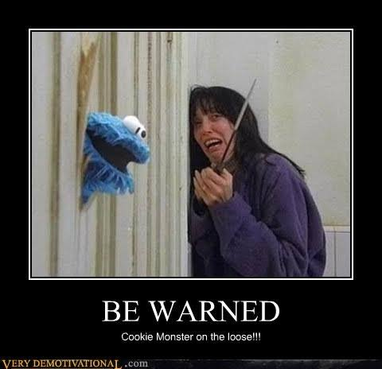

Vini Frog
Programador em ascenção
Eu sou um programador experiente, com habilidades em diversas linguagens de programação, incluindo TypeScript e Python. Em particular, tenho experiência em desenvolver aplicações web utilizando o TypeScript como linguagem de programação principal, bem como em trabalhar com a linguagem Python para realizar tarefas de análise de dados e automação de tarefas.